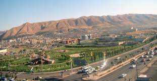
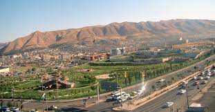

The city of Duhok is embraced by two chains of mountains, Bekhair to the north and northeast and Zaiwa in the southeast. These mountains confer the city a linear shape and special landscape. The city lies in the northwest of Iraq and western part of Kurdistan region, about 470 km north of Baghdad and 430-450 m above the sea level. Along with another five districts Sumeal, Zakho, Amedy, Sheikhan and Akre, Duhok city make up the area administrated by Duhok governorate. Duhok covers 10715 square km and lies on latitude 36 north and longitude 43 east. There are two rivers passing through the city; the first one is called Duhok River, whilst the second one which is smaller and seasonal called Heshkarow River. Both rivers meet up in the southwest of the city, and the water is mainly used for irrigation purposes which help preserving the nearby green areas.
Throughout the history to the present time Duhok has acquired a strategic position historically and geographically. The city was a trouble zone between disputed forces; Assyrian state in Nineveh and Urartu, Kutians and Meetanians Kingdoms. Nevertheless, Duhok has gained and maintained its identity as a commerce passage from its important location as a junction between Iraq, Turkey, and Syria and as a gateway for Iraqi Kurdistan. This is evident from reliable historic records and the existing remains in the city.